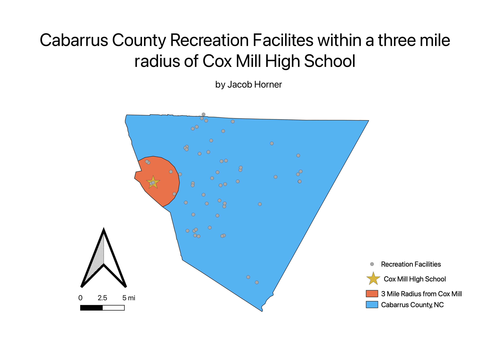

Homework 8: Cabarrus County Recreation Facilities within a 3 mile radius of Cox Mill High School
Jacob Horner
This map answers the pressing question: how many Cabarrus County recreation facilities are within a 3 mile radius of Cox Mill High School?
The first step to answering this question was to make a 3 mile buffer around the Cox Mill High School polygon.
The next step was to make a clip between the buffer layer and the Cabarrus County basemap layer.
The clip layer indicates that there are 5 Cabarrus County recreation facilities within a 3 mile radius of Cox Mill High School.
This information should be of great concern for everyone with ties to UNC, as it pertains to our star basketball player Leaky Black.
Leaky Black attended Cox Mill High School during his senior year of high school. With this map, we can visualize the facilities he had access to
during his development as an elite college basketball player.
.

Data used for this project
Cabarrus County Base Map
Recreation Facilities shape file
Schools shape file altered to show only Cox Mill High School
Data created for this project
Buffer layer created
Clip layer created